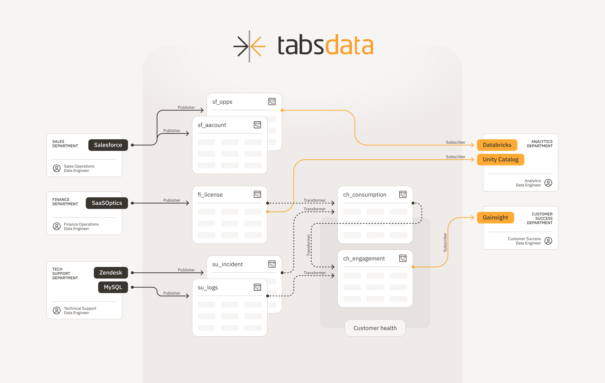

Overview#
Tabsdata is a data integration middleware that leverages the publish-subscribe (pub/sub) model to enable seamless and decoupled access to data. Inspired by the success of pub/sub architectures in messaging systems, Tabsdata decouples data producer and consumer teams, eliminating integration complexity.
Within Tabsdata, data is organized in tables. Tabsdata enables and streamlines the creation of derived tables using data from multiple data sources. This approach enhances semantic cohesion, reduces errors, improves data quality, and facilitates self-service data access across domains. The Tabsdata architecture also supports complete lineage tracking of tables and record-level provenance, enhancing transparency and visibility.
With Tabsdata, data integration transitions from being a last-mile solution for operations and analytics to becoming a foundational pillar of data-driven organizations, empowering democratization and self-service access to high-quality data.
Design and Architecture#
Tabsdata acts as middleware between data storage systems. You interact with Tabsdata using Python and the command line interface (CLI).
The three primary components of Tabsdata – publishers, transformers and subscribers – enable the exchange of information at the level of a table, which is the fundamental unit of operation. These components are written as Python functions. Each function is tailored for specific data integration tasks.
The following image shows the fundamental Tabsdata architecture:
{kind=link}
Publishers
A publisher function reads data from an external system and writes the data as one or more Tabsdata tables. For more information, see Publishers.
Transformers
A transformer function applies transformations across one or more Tabsdata tables and writes the results as one or more Tabdata tables. Use transformers to prepare data for your data consumer teams. For more information, see Transformers.
Subscribers
A subscriber function reads data from one or more tables in the Tabsdata server and writes them to an external system. For more information, see Subscribers.
Triggers
A trigger executes the function. A trigger can be initiated through a CLI command or by a new commit to its associated table. Consequently, changes on tables can automatically trigger functions, which in turn change other tables, leading to a cascading workflow of updates.
For more information, see Triggers.
Tables
A Tabsdata table is data organized in rows and columns, similar to a database table. Each column has a name and all the values in the column have the same data type. A Tabsdata table only exsists inside the Tabsdata server.
You can use any Tabsdata table, including previous versions of tables, as input to create or modify other tables in Tabsdata. You can also export Tabsdata tables to external systems as CSV, jsonl, ndjson, and parquet files.
Tabsdata tables include both table metadata and table data with each write. Tabsdata retains previous versions of tables to enable lineage and provenance discovery. For more information, see Working with Tables.
Collections
A collection is a group of tables and the functions that write to those tables. Tables in a collection typically belong to a business or functional domain.
Advantages#
The Tabsdata architecture provides the following advantages:
Consistent state - Tabsdata performs atomic updates on output tables. Each function produces a complete, consistent update on all tables, or no update at all, eliminating the possibility of partial updates.
Streamlined governance - All tables in the Tabsdata server are immutable and maintain a revision history to ensure the full traceability of data.
Better data control - Data producers have greater control over their data by transferring only the necessary data to Tabsdata for data consumers.
Automated Data Engineering - Data engineers can automate the manual processing of data by leveraging Tabsdata pub/sub processing and transformers to streamline daily tasks.
Simplified Data Consumption - Data consumers use Tabsdata to subscribe to the tables they need. With Tabsdata, engineers do not have to access diverse data sources for the data that they need.
Community#
You can join the Tabsdata community here on Github or Discord.
Contributing#
We appreciate all contributions, from reporting bugs to implementing new features. You can access the Tabsdata Github repository here.
License#
For the license information, see on the Tabsdata website.